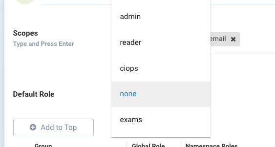
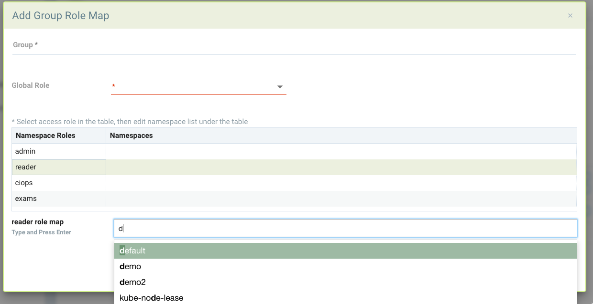

Utilisateurs et rôles
Configuration des utilisateurs et des rôles personnalisés
Le menu Paramètres → Utilisateurs et Rôles permet la gestion des utilisateurs ainsi que des rôles. Chaque utilisateur est assigné à un rôle prédéfini ou personnalisé. Les utilisateurs peuvent être associés à des rôles via l’intégration de groupe avec LDAP/AD ou d’autres intégrations de système SSO. Consultez la section Intégration d’entreprise pour obtenir des instructions détaillées sur chaque type d’intégration, qu’il s’agisse d’une intégration de répertoire ou d’une intégration SSO.
Utilisateurs
Les utilisateurs peuvent être configurés directement dans SUSE® Security ou intégrés via des répertoires/SSO. Pour créer un nouvel utilisateur dans SUSE® Security, allez dans Paramètres → Utilisateurs et Rôles et ajoutez l’utilisateur. Sélectionnez le rôle de l’utilisateur parmi les rôles prédéfinis, ou voir ci-dessous pour créer un rôle personnalisé.
L’exigence de mot de passe par défaut est d’une longueur minimale de 8 caractères, 1 lettre majuscule, 1 lettre minuscule, 1 caractère numérique. Ces exigences et d’autres peuvent être modifiées par un administrateur dans Paramètres → Utilisateurs sous Authentification et Politiques de Sécurité.
Utilisateurs restreints par espace de noms
Les utilisateurs peuvent être restreints à certains espaces de noms. Sélectionnez d’abord le rôle global (utilisez 'aucun' si aucun rôle global n’est souhaité), puis cliquez sur les Paramètres avancés.
Sélectionnez un nom de rôle dans la liste des rôles, puis indiquez les espaces de noms auxquels l’utilisateur a accès. Par exemple, ci-dessous se trouve un rôle de lecteur global (vue uniquement), mais pour l’espace de noms 'demo', l’utilisateur dispose des droits d’administrateur et, pour l’espace de noms 'staging', il dispose des droits CI/Ops. Si un rôle personnalisé a été configuré précédemment, celui-ci peut également être sélectionné.

|
Si un utilisateur s’est déjà connecté via une intégration d’entreprise, son fournisseur d’identité (par exemple, OpenID Connect) sera listé. Un utilisateur peut être promu administrateur fédéré si la gestion multi-cluster est utilisée en sélectionnant l’utilisateur et en modifiant. |
|
Lorsqu’un utilisateur restreint à un espace de noms configure un registre dans les Actifs dans SUSE® Security, seuls les utilisateurs ayant accès à cet espace de noms peuvent voir/scanner ce registre. Les utilisateurs globaux pourront voir/gérer ce registre, mais pas les utilisateurs avec des espaces de noms ou des rôles restreints. |
Rôles
Les rôles préconfigurés incluent Administrateur, Lecteur et CI/Ops. Pour créer un nouveau rôle personnalisé, sélectionnez l’onglet Rôles dans Paramètres → Utilisateurs et Rôles. Nommez le rôle et ajoutez-lui les autorisations de lecture ou d’écriture appropriées.

Autorisations RBAC
-
Contrôle d’admission. Gérer les règles de contrôle d’admission.
-
Événements d’audit. Afficher les journaux des rapports de risque de Notification →.
-
Authentification. Activer la configuration du répertoire et SSO (oidc/saml/ldap).
-
Autorisation. Créer de nouveaux utilisateurs et des rôles personnalisés.
-
Analyse CI. Permet de scanner des images via l’API REST. Utile pour configurer un utilisateur de scanner de plug-in de phase de construction.
-
Conformité. Créer des scripts de conformité personnalisés et examiner les résultats des vérifications de conformité.
-
Événement. Accéder aux journaux des événements de Notifications →.
-
Analyse du registre. Configurer l’analyse du registre et afficher les résultats.
-
Stratégie d’exécution. Gérer les menus de stratégie pour le mode de stratégie (Découvrir, Surveiller, Protéger), Règles réseau, Règles de processus, Règles d’accès aux fichiers, DLP, Capture de paquets, Règles de réponse.
-
Analyse d’exécution. Déclencher et afficher l’analyse de vulnérabilité d’exécution des conteneurs/nœuds/plateforme.
-
Événement de sécurité. Accéder aux notifications → des journaux d’événements de sécurité.
-
Configuration système. Autoriser la configuration des paramètres → Configuration.
Mapper des groupes à des rôles et des espaces de noms.
Les groupes peuvent être mappés à des rôles prédéfinis ou personnalisés dans SUSE® Security. De plus, un rôle peut être restreint à un ou plusieurs espaces de noms.
Dans la configuration LDAP/AD, SAML ou OIDC dans les paramètres, la dernière section de l’écran de configuration mappe les groupes aux rôles et aux espaces de noms. Tout d’abord, sélectionnez un rôle par défaut, le cas échéant, pour le mappage.

Pour mapper un groupe à un rôle et un espace de noms, cliquez sur Ajouter pour créer un nouveau mappage. Sélectionnez un rôle global ou aucun. Si admin ou FedAdmin est sélectionné, cela donne un accès en écriture à tous les espaces de noms. Si un rôle différent est sélectionné, il peut être restreint davantage en sélectionnant les espaces de noms souhaités.

L’exemple suivant fournit quelques mappages possibles. Le demo_admin peut lire/voir tous les espaces de noms mais a des droits d’administrateur sur les espaces de noms demo et demo2. Le system_admin n’a des droits d’administrateur que sur l’espace de noms kube-system. Et les fed_admins ont le rôle prédéfini fedAdmin qui donne un accès en écriture à toutes les ressources à travers plusieurs clusters.

|
Si l’utilisateur est dans plusieurs groupes, le rôle sera 'premier correspondant' dans l’ordre énuméré et le rôle du groupe sera attribué. Veuillez ajuster l’ordre de configuration pour un comportement approprié en faisant glisser et déposer les mappages dans l’ordre approprié dans la liste. |
Rôles Multi-Cluster FedAdmin et Admin pour la gestion primaire et distante
Lorsqu’un cluster est promu pour devenir un cluster primaire, l’administrateur devient automatiquement un FedAdmin. Le FedAdmin peut effectuer des opérations sur le primaire telles que générer un jeton de fédération pour connecter un cluster distant ainsi que créer des règles de sécurité fédérées telles que des règles de réseau, de processus, de fichiers et de contrôle d’admission.
Les rôles de gestion multi-cluster sont les suivants :
-
Sur n’importe quel cluster, un administrateur local ou un administrateur Rancher SSO peut promouvoir le cluster pour devenir primaire.
-
Les utilisateurs Ldap/SSO/SAML/OIDC avec des rôles d’administrateur ne peuvent pas promouvoir un cluster en primaire.
-
Seul le FedAdmin peut générer le token requis pour rejoindre un cluster distant au primaire.
-
Tout administrateur, y compris les utilisateurs ldap/sso/saml/oidc, peut rejoindre un cluster distant au primaire s’il dispose du token.
-
Seul le FedAdmin peut créer un nouvel utilisateur en tant que FedAdmin (ou FedReader) ou attribuer le rôle FedAdmin (ou FedReader) à un utilisateur existant (y compris les utilisateurs ldap/sso/saml/oidc).